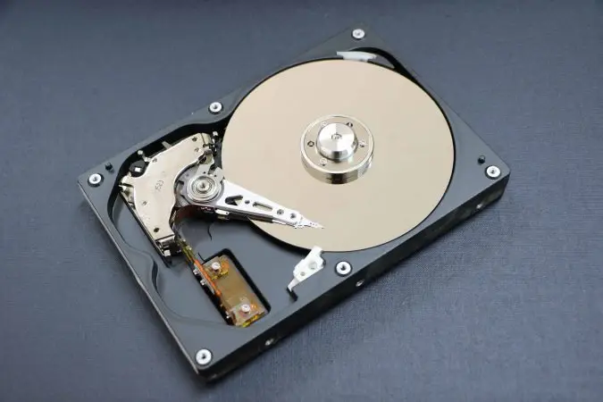
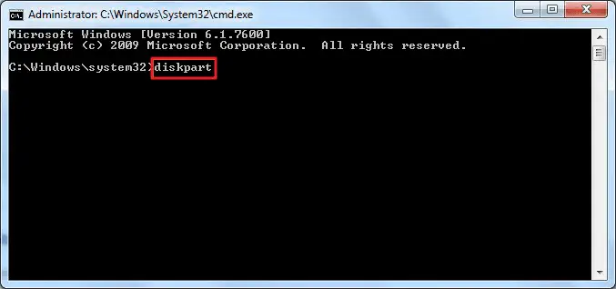
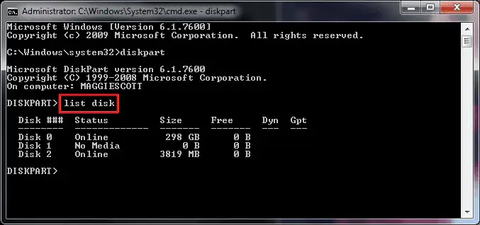
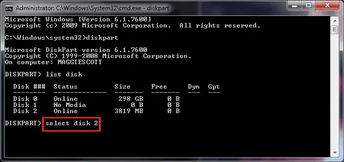
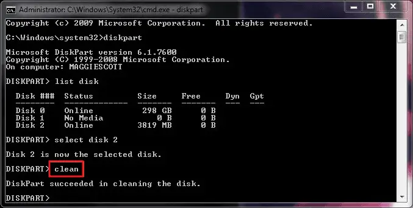
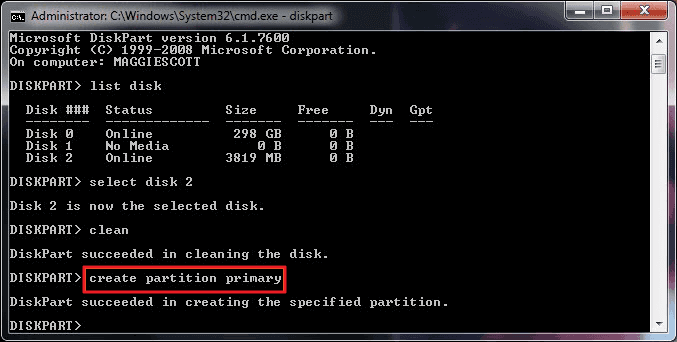
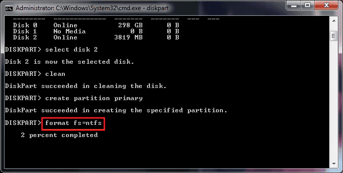
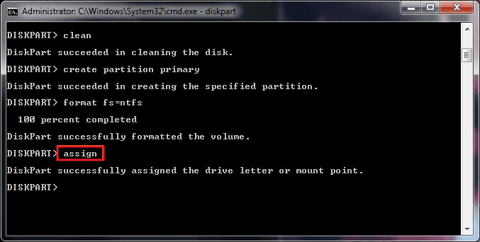

Aula Promogração
Comandos Terminal
- cd .. (volta 1 diretório)
- d: .. (troca de volume de dados)
- dir (mostra as pastas de arquivos)
Como apagar um hd pelo C.M.D (terminal)

- disckpart (entra no modo de formataçao de hd)

- list disck (abre a lista de unidades no pc)

- select disck (informa qual unidade voce quer usar)

- clean (limpa tudo q tem na unidade)

- Create partition primary (cria uma nova partiçao na unidade)

- format fs=nfts(formata a nova partiçao para uso)

- assign (para adicionar uma letra para a unidade)

- exit (para sair do terminal)
Comandos Github
- git clone url (clona um repositório do git)
- git pull (puxa as mudanças de código para o meu computador)
- git add . (adiciona tudo)ou (o nome do arquivo)
- git commit -m "seu comentario" (para informar o q foi feito)
- git push (envia os documentos para o github)